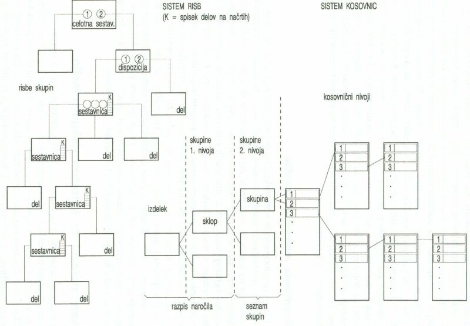

|
Naèin dokumentiranja stopnièaste modularne zgradbe uporabljajo velika in srednja podjetja za posamièno in serijsko proizvodnjo. Ta naèin dokumentiranja zgradbe in sestavljanja izdelkov omogoèa sestavljanje izdelka le in zgolj iz standardnih ali tipskih skupin po principu modulne gradnje. Iz tipiziranih kosovnic lahko sestavimo veèje sisteme ne glede na to, koliko redov podsestavov ali skupin vsebuje izdelek. Tak naèin dokumentiranja omogoèa tudi razdelitev dela po fazah obdelave glede na tehnološke postopke. Vsako kosovnico v glavi lahko delimo tako, da ima spet svojo kosovnico. Številke pozicij v skupinskih sestavnicah so tekoèe številke. Iz kosovnic so razvidne tekoèe številke risb. Glavna sestavna risba v tem primeru nima nima pozicij, ker nima kosovnice. V glavni sestavni risbi je razvidna delitev izdelka na skupine 1. reda. Skupine 2. reda doloèimo na podlagi konstrukcijskega osnutka. V skupinah drugega reda že najdemo števike risb in kosovnic. Vsaka skupina 1. reda ima svoj seznam skupin 2. reda, iz katerih je sestavljena.  Stopnièasta modulna zgradba stavka risb in kosovnic 1. Vprašanja za usmerjanje pozornosti in usvajanje novih besed: 1. V kakšnem primeru uporabljamo naèin dokumentiranja s stopnièasto modularno zgradbo izdelka? 2. Kaj omogoèa naèin dokumentiranja s stopnièasto modularno zgradbo izdelka? 3. Koliko ravni podsestavov vidiš na zgornji sliki? 2. Zapiši od ene do pet kljuènih besed, ki povzemajo vsebino te uène enote. 3. Vprašanja za razmislek, ponavljanje in povezovanje z lastno izkušnjo: 1. Zapiši besede v besedilu te uène enote, ki jih ne razumeš! 2. Si morda besede, ki jih ne razumeš, sreèal/a že kdaj prej? V kakšnih okolišèinah in s èim v zvezi? 4. Domaèa naloga: V enem do petih stavkih zapiši, kaj ti je v tej uèni enoti najbolj ostalo v spominu. |